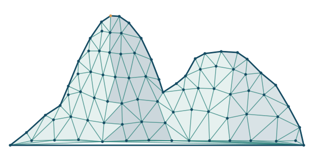

01 / Featured edition
In preparation- Date
- To be confirmed
- Venue
- UERJ · room to be confirmed
- Participation
- Visiting researchers
Programme
Times and talks to be confirmed.
Editions
Upcoming editions
Dates and frequency to be confirmed.
Past editions
No past editions yet.
About the series
An academic seminar series on combinatorics in Rio de Janeiro.
Organizing committee
Practical information
Venue
UERJ · campus and room to be confirmed.
Contact and participation
Contact: to be confirmed.
Registration: to be confirmed.